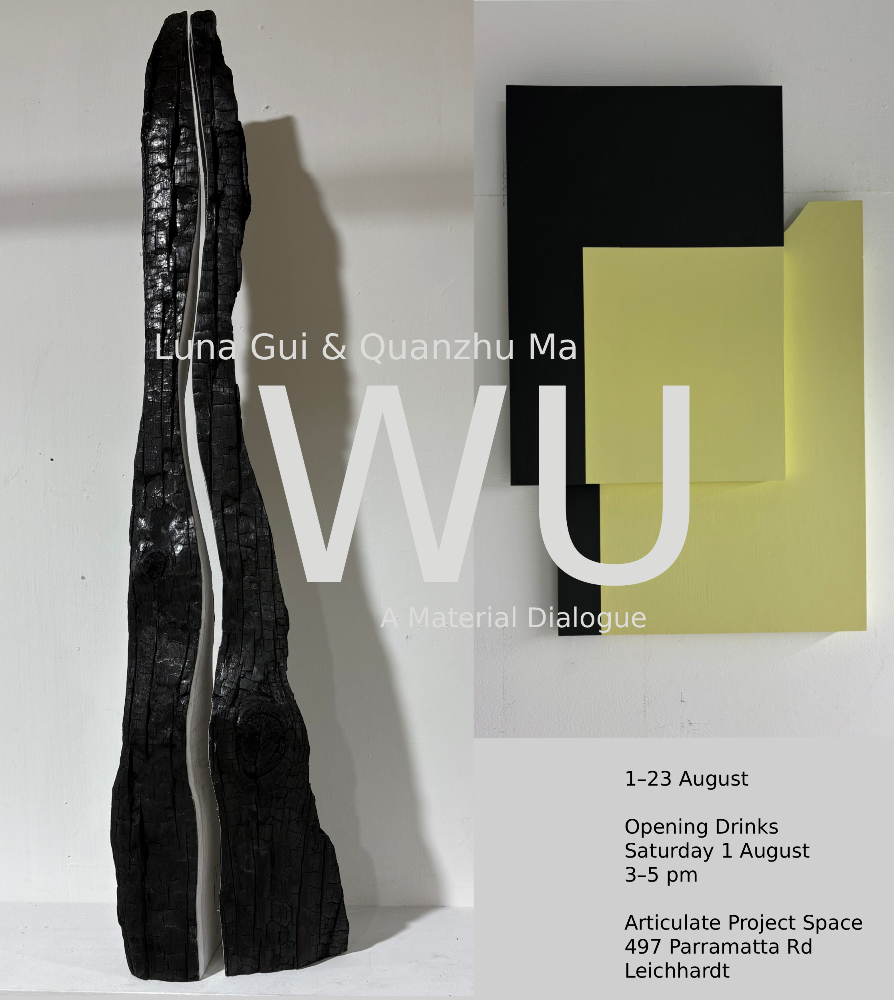

Between States
An essay by Luna Gui exploring material transformation, perception, and the making of WU.
Read →Materials are never simply themselves.
Wood, plaster, paper, and space.
Materials carry traces of transformation; perception remains in motion.

Articulate Project Space
497 Parramatta Road, Leichhardt NSW 2040
1–23 August 2026
Opening: Saturday 1 August, 3–5 pm
Gallery open Friday–Sunday, 11 am–5 pm
WU is a collaborative installation by Sydney-based artists Luna Gui and Quanzhu Ma. Working across expanded drawing, installation, and material-based practices, the exhibition brings together two distinct approaches through a shared interest in materials.
Drawing on the concept of the Five Elements, Ma employs processes such as burning, weathering, fragmentation, and reconstruction, allowing materials to record the effects of time, chance, and natural forces. Gui explores spatial perception through constructed forms and a reduced visual language, investigating how relationships between objects, architecture, and the viewer’s movement shape the experience of space.
Throughout the exhibition, branches, burnt wood, plywood, veneer, plaster, paper, paint, and tape create a shared material vocabulary. Collaborative installations are presented alongside individual works, with each informing and extending the others through shared materials and spatial relationships. Familiar materials reappear in unexpected ways, revealing contrasts between natural and manufactured, fragile and solid, rough and refined. Instead of presenting a single narrative, the works invite visitors to look closely and discover connections as they move through the gallery.
The exhibition title references the Chinese characters 物 (wu, material thing) and 悟 (wu, realisation or awakening). Sharing the same pronunciation while carrying different meanings, the two characters suggest a dialogue between material experience and understanding.
By bringing these two practices into dialogue, WU invites visitors to experience familiar materials in new ways and discover connections between materials, space, and the act of looking.
An essay by Luna Gui exploring material transformation, perception, and the making of WU.
Read →Luna Gui is a Sydney-based artist working across painting, object-making, and installation. Influenced by post-minimalist and formalist traditions, her practice explores how form, colour, and spatial relationships shape the experience of seeing. Through constructed forms and a reduced visual language, her installations invite viewers to encounter space as something that continually shifts through movement, perception, and attention. She holds an MFA and a BFA (Painting) from the National Art School and exhibits regularly within Sydney's independent art scene. She is the recipient of the John Olsen Prize for Drawing (Highly Commended), and her work is held in both private and public collections.
Quanzhu Ma is a contemporary artist based in Sydney whose practice centres on material process and elemental transformation. Working primarily with paper and wood, he employs actions such as burning, crushing, soaking, and exposure to weather to generate form through chance and repetition. Drawing on the concept of the Five Elements and natural processes, his work explores relationships between materials, time, and environmental forces, allowing matter to bear the traces of change. He holds a postgraduate degree from the National Art School and was the recipient of the Kaye Shumack Sunflower Drawing Prize.